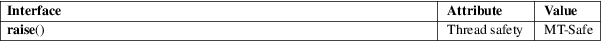

raise − send a signal to the caller
Standard C library (libc, −lc)
#include <signal.h>
int raise(int sig);
The raise() function sends a signal to the calling process or thread. In a single-threaded program it is equivalent to
kill(getpid(), sig);
In a multithreaded program it is equivalent to
pthread_kill(pthread_self(), sig);
If the signal causes a handler to be called, raise() will return only after the signal handler has returned.
raise() returns 0 on success, and nonzero for failure.
For an explanation of the terms used in this section, see attributes(7).

C11, POSIX.1-2008.
POSIX.1-2001, C89.
Since glibc 2.3.3, raise() is implemented by calling tgkill(2), if the kernel supports that system call. Older glibc versions implemented raise() using kill(2).
getpid(2), kill(2), sigaction(2), signal(2), pthread_kill(3), signal(7)